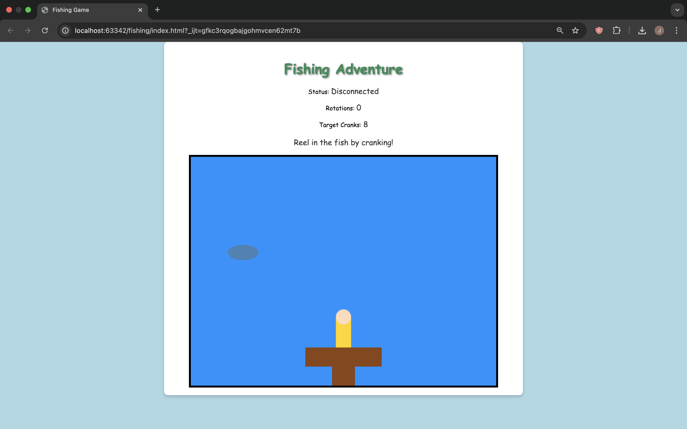

/final project: fishing adventure
# the project
# ---------------------------------
Ah, we've finally made it. For my final project, I made, what some are calling, the greatest game since hide and seek. I am far too humble to ever consider my creation to be the greatest game since hide and seek. The greatest game since tag? Now that's a comparison I am on board with.
Alright, let's cut to the chase. If you have been keeping up, my final project idea started as a self-contained portable charger. This would work by hand cranking a motor and storing the power in a battery. I needed to find a way to gamify this, however. The game? Fishing Adventure.

Have you ever been out fishing and you finally get a bite? But what now? You have no idea how many cranks it will take to reel that fish in! That is what the team here at Fishing Adventure set out to solve. No longer will you have to just crank and hope. Our proprietary technology tells the user exactly how many cranks it will take to catch a virtual fish.
Allow me to demonstrate:
The game was coded with simple HTML and Javascript. I tried experimenting with a few Javascript packages to make it look better, but that will be a hill I will have to climb another time. The ESP32 communicated with the web game through WebSockets, an Arduino package.
# what's next
# ---------------------------------
I never got around to the power storage part of the project, which, is a bit sad considering that was the whole point. Well, Julius H. Comroe Jr. said it best: "Serendipity is looking in a haystack for a needle and discovering a farmer's daughter."
Trust me when I say I will be back. I will not stop until every child in America has a 3D printed virtual fishing crank in their hands or until I find a way to store the power I generate from turning the motor, whichever comes first.
The official Fishing Adventure repository can be found here.
For business inquiries or investment interest please contact Jack Schwab, Fishing Adventure Founder & CEO.
# acknowledgements
# ---------------------------------
Thank you so much to Nathan for his outstanding patience and support.
Thank you so much to Kassia for her calming presence and steadfastness in helping me debug various problems.
Thank you so much to Bobby for getting in the trenches with us and carrying us out of them when the war was over.
I genuinely consider you a role model, and I am grateful for this course in that it introduced me to you.
Thank you to Chris and Jessica for being a friendly face around the lab.
Thank you to Aurora and Bella for recommending this class to me.
Thank you to Pedro for being a great friend and for always rooting for me.
Thank you to the entire Fall 24 PS70 class: you are all awesome and I loved sharing the shop with you all.
Thank you to the ultra-lax late work policy for always having my back.
PS70 changed my life.
PS70 changed the way I view the world around me.
PS70 gave me a greater appreciation for the "things" I take for granted.
PS70 felt more than a class and the people in it felt more than classmates.
PS70, thank you.